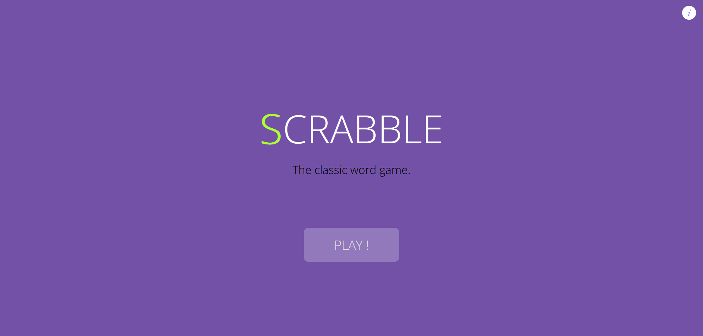
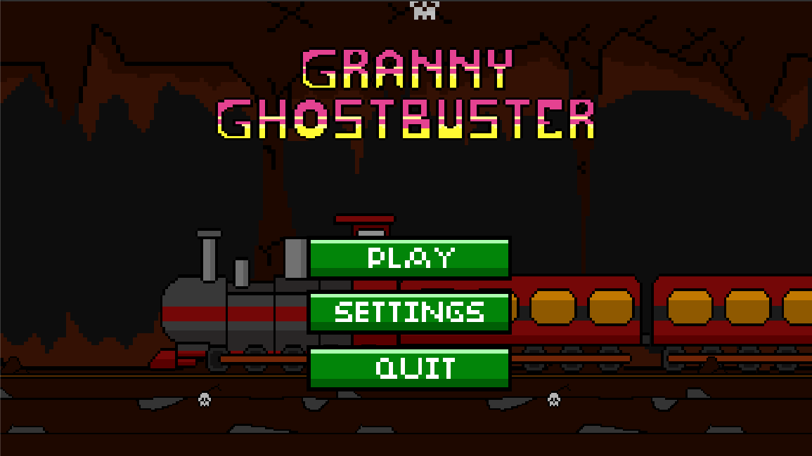
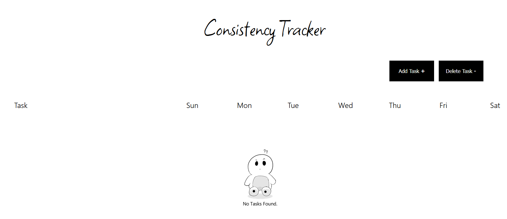

Scrabble
Scrabble is a word-based multiplayer board game where you compete against other players to score
points by creating words letter by letter. The website uses React.js as its front-end framework and
a Express based Node.js backend along
with the Websockets implementation Socket.io to create real-time
communication.

Granny GhostBuster
Granny GhostBuster is a endless sidescrolling run-n-gun game with a unique twist and charming
pixel art style. It is a solo project developed in Unity
with the animation and art done in
Krita.

Consistency Tracker
Consistency Tracker is a very simple tool to track personal consistency in several user-defined
tasks with the ability to track partial progress and full progress. The website uses
React.js as its front-end framework and the
localForage package to store user-data locally.